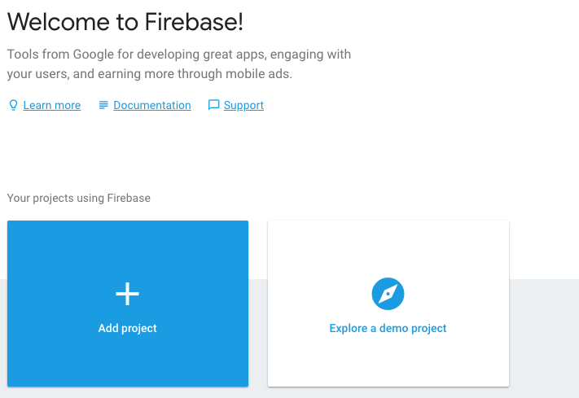
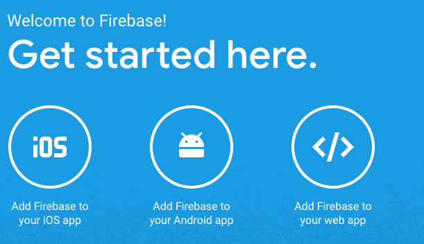
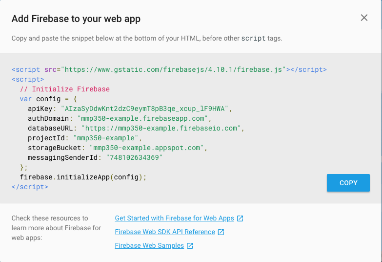

Today we're going to create a new web application using Firebase.
Firebase is a Google product that will let us create dynamic websites connected to a database and host them all for free (up to 5 projects).
Firebase has a nice visual interface that I think helps demystify (make less mysterious) what happens in a database.
We need to start by making a Firebase account at firebase.google.com.
If you already have a Google account this will be pretty easy.
If you don't have one you will need to create one now.
When you're get your account set up, start by clicking "Add Project" from the main Firebase page, console.firebase.google.com.
Take a moment to explore the site and the services that are available.
When you're ready, click the "Add Firebase to Your Web App" button.
A window will pop up with some info you can add to your app to connect with Firebase.
We need to throw that code into an HTML page along with some references to the Firebase SDK so that we can use Firebase in our app.
New changes actually prefer Firebase to be loaded by specific modules, rather than all at once.
This should be replaced with this.
Test to see if Firebase is working by opening the console and typing in:
You should see an object returned in the console with properties like SDK_VERSION, auth and app.